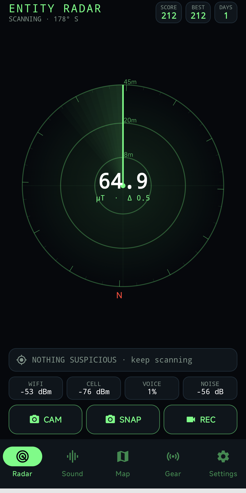
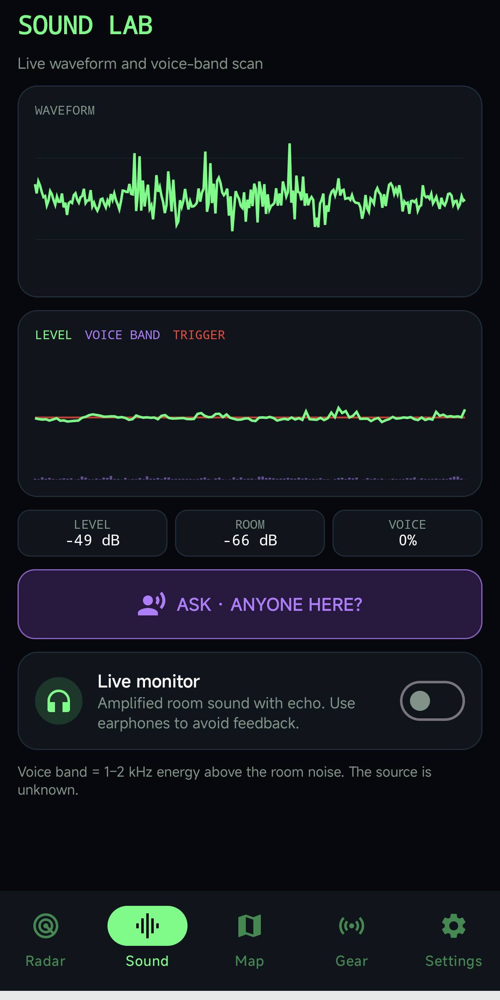
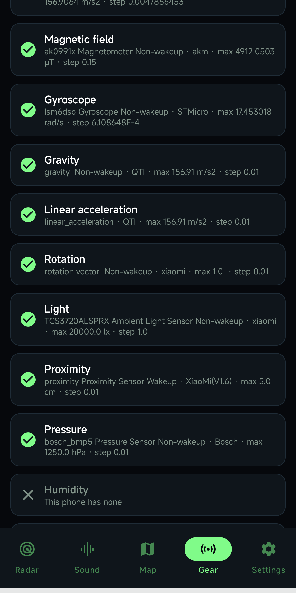

Apps / EntityRadar 2 Pro
Paid entertainment appEntityRadar 2 Pro
A paid radar for sensors already on your phone. It does not name what it sees, and it does not detect supernatural entities. No ads and no account. USD 3.99 on Google Play.
Get it on Google PlayScreenshots



The app
A sudden change is marked as a suspicion. A steady high reading does not raise an alert. Direction and distance on the scope are a guide for the game, not a location of a real entity.
Radar
The magnetic field is shown in microteslas, with the change from the recent average beside it. Wi-Fi, cellular signal, voice-band level, and noise sit under the scope. The scope has a sweep, range rings, and a north mark.
Sound lab
The microphone draws a live waveform, a level trace, and a voice-band bar. Ask "Anyone here?" and the phone listens for about ten seconds. If a voice-like sound rises above the room, the app keeps the few seconds around it and plays them back, with an echo or as recorded. Nothing is uploaded.
Hunt map
Suspicions can be saved on a map with the sensor numbers from that moment. You can delete one mark, or clear them all in Settings.
Camera and gear
Turn the camera on and a person in frame is drawn as a stick figure. Snap saves a photo to Pictures/EntityRadar2Pro. Record saves a video to Movies/EntityRadar2Pro. Gear lists the sensors on this phone and can set the current magnetic field, noise, and pressure as a baseline.
Settings
Vibration strength is a slider, and each step buzzes once. Sound and the screen-edge flash can be turned off.
On the phone
Photos, videos, sound clips, and map marks stay on the phone. A weather lookup sends coordinates to Open-Meteo. If you allow only approximate location, those coarser coordinates are sent instead.
USD 3.99 on Google Play. No ads. Rated Everyone. Google Play · Privacy policy